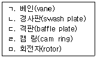
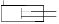
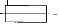
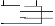
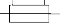
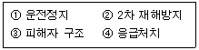

지게차운전기능사 (2004-07-18 기출문제)
1. 디젤기관의 진동 원인과 가장 거리가 먼 것은?
- 분사시기, 분사간격이 다르다.
- 각 피스톤의 중량차가 크다.
- 각 실린더의 분사압력과 분사량이 다르다.
- 윤활 펌프의 유압이 높다.
(정답률: 62%)

2. 디젤기관에서 시동을 돕기 위해 설치된 부품으로 적당한 것은?
- 디퓨저
- 과급 장치
- 히트레인지
- 발전기
(정답률: 49%)
3. 디젤기관에서 시동이 잘 안 되는 원인으로 맞는 것은?
- 스파크 플러그의 불꽃이 약할 때
- 클러치가 과대 마모 되었을 때
- 연료계통에 공기가 차 있을 때
- 냉각수를 경수로 사용할 때
(정답률: 52%)
4. 디젤기관에서 압축행정시 밸브는 어떤 상태가 되는가?
- 배기밸브만 닫힌다.
- 흡입과 배기밸브 모두 닫힌다.
- 흡입밸브만 닫힌다.
- 흡입과 배기밸브 모두 열린다.
(정답률: 67%)
5. 디젤엔진은 연소실에 연료를 어떤 상태로 공급하는가?
- 가솔린 엔진과 같은 연료 공급펌프로 공급한다.
- 노즐로 연료를 안개와 같이 분사한다.
- 기화기와 같은 기구를 사용하여 연료를 공급한다.
- 액체 상태로 공급한다.
(정답률: 70%)
6. 작업현장에서 드럼통으로 연료를 운반했을 경우 올바른 주유 방법은?
- 불순물을 침전시킨 후 침전물이 혼합되지 않도록 주입한다.
- 불순물을 침전시켜서 모두 주입한다.
- 연료가 도착하면 즉시 주입한다.
- 수분이 있는가를 확인 후 즉시 주입한다.
(정답률: 82%)
7. 방열기에 물이 가득 차 있는데도 기관이 과열되는 원인으로 가장 적절한 것은?
- 에어클리너가 고장 났기 때문
- 팬벨트의 장력이 세기 때문
- 정온기가 폐쇄된 상태로 고장 났기 때문
- 온도계의 고장 났기 때문
(정답률: 56%)
8. 작업 중 엔진온도가 급상승하였을 때 먼저 점검하여야 할 것은?
- 고부하 작업
- 장기간 작업
- 윤활유 수준 점검
- 냉각수의 양 점검
(정답률: 84%)
9. 점도지수가 큰 오일의 온도변화에 따른 점도 변화는?
- 적다.
- 크다.
- 온도와 점도 관계는 무관하다.
- 불변이다.
(정답률: 54%)
10. 오일여과기의 역할은?
- 오일의 순환작용
- 오일의 압송
- 오일 세정작용
- 연료와 오일 정유 작용
(정답률: 49%)
11. 건식 공기 여과기 세척 방법으로 맞는 것은?
- 압축증기로 안에서 밖으로 불어낸다.
- 압축공기로 안에서 밖으로 불어낸다.
- 압축증기로 밖에서 안으로 불어낸다.
- 압축공기로 밖에서 안으로 불어낸다.
(정답률: 76%)
12. 기동 전동기의 마그넷 스위치는?
- 기동 전동기의 저항 조절기이다.
- 기동 전동기의 전류 조절기이다.
- 기동 전동기의 전압 조절기이다.
- 기동 전동기용 전자석 스위치이다.
(정답률: 64%)
13. AC 발전기에서 전류가 발생되는 것은?
- 로터 코일
- 스테이터 코일
- 전기자 코일
- 레귤레이터
(정답률: 49%)
14. 6기통 디젤기관에서 병렬로 연결된 예열(Grow)플러그가 있다. 3번 기통의 예열(Grow)플러그가 단락되면 어떤 현상이 발생되는가?
- 전체가 작동이 안 된다.
- 3번 옆에 있는 2번과 4번도 작동이 안 된다.
- 축전지 용량의 배가 방전된다.
- 3번 실린더만 작동이 안 된다.
(정답률: 67%)
15. 전자제어 디젤 분사장치에서 연료를 제어하기 위해 센서로 부터 각종 정보(가속페달의 위치, 기관속도, 분사시기, 흡기, 냉각수, 연료온도 등)를 입력받아 전기적 출력신호로 변환하는 것은?
- 자기진단(self diagnosis)
- 제어유닛(ECU)
- 컨트롤 슬리브 액츄에이터
- 컨트롤 로드 액츄에이터
(정답률: 55%)
16. 12V 축전지의 구성(셀수)은 어떻게 되는가?
- 약 4V의 셀이 3개로 되어있다.
- 약 3V의 셀이 4개로 되어있다.
- 약 6V의 셀이 2개로 되어있다.
- 약 2V의 셀이 6개로 되어있다.
(정답률: 47%)
17. 장비에 장착된 축전지를 급속 충전할 때 축전지의 접지케이블을 떼는 이유로 맞는 것은?
- 기동 전동기를 보호하기 위해
- 발전기의 다이오드를 보호하기 위해
- 과충전을 방지하기 위해
- 조정기의 접점을 보호하기 위해
(정답률: 46%)
18. 굴삭기에서 프론트 아이들러의 작용에 대한 설명으로 가장 적당한 것은?
- 트랙의 진로를 조정하면서 주행방향으로 트랙을 유도한다.
- 파손을 방지하고 원활한 운전을 할 수 있도록 하여 준다.
- 트랙의 주행을 원활히 한다.
- 동력을 트랙으로 전달한다.
(정답률: 52%)
19. 굴삭기 트랙의 장력조정 방법으로 맞는 것은?
- 하부 로울러의 조정방식으로 한다.
- 트랙 조정용 심(shim)을 끼워서 한다.
- 트랙 조정용 실린더에 그리스를 주입한다.
- 캐리어 롤러의 조정방식으로 한다.
(정답률: 43%)
20. 지게차의 화물 운반 작업 중 가장 적당한 것은?
- 댐퍼를 뒤로 3° 정도 경사시켜서 운반한다.
- 마스트를 뒤로 4° 정도 경사시켜서 운반한다.
- 바이브레이터를 뒤로 8° 정도 경사시켜서 운반한다.
- 샤퍼를 뒤로 6° 정도 경사시켜서 운반한다.
(정답률: 67%)
21. 지게차의 작업장치가 아닌 것은?
- 사이드 시프트
- 로테이팅 클램프
- 힌지드 버킷
- 브레이커
(정답률: 47%)
22. 트랙의 주요 구성품이 아닌 것은?
- 스윙기어
- 핀
- 슈판
- 링크
(정답률: 52%)
23. 타이어식 로우더가 무한 궤도식 로우더에 비해 좋은 점은?
- 견인력
- 습지에서의 작업성
- 기동성
- 좁은 공간에서의 선회성
(정답률: 69%)
24. 클러치가 연결된 상태에서 기어변속을 하면 일어나는 현상은?
- 기어에서 소리가 나고 기어가 상한다.
- 변속레버가 마모된다.
- 클러치 디스크가 마멸된다.
- 변속이 원활하다.
(정답률: 47%)
25. 제동장치의 구비 조건 중 틀린 것은?
- 점검 및 조정이 용이해야 한다.
- 작동이 확실하고 잘되어야 한다.
- 마찰력이 남아야 한다.
- 신뢰성과 내구성이 뛰어나야 한다.
(정답률: 79%)
26. 다음 설명에서 올바르지 않는 것은?
- 최근의 부동액은 4계절 모두 사용하여도 무방하다.
- 엔진오일 교환시 여과기도 같이 교환한다.
- 장비운전, 작업시 기관회전수를 낮추어 운전한다.
- 장비의 그리스 주입은 정기적으로 하는 것이 좋다.
(정답률: 46%)
27. 건설기계 등록 말소 사유에 해당되지 않는 것은?
- 건설기계가 멸실 되었을 때
- 정비 또는 개조를 목적으로 해체된 때
- 건설기계를 폐기한 때
- 건설기계의 차대가 등록시의 차대와 다른 때
(정답률: 62%)
28. 건설기계의 높이를 정의한 것이다. 가장 적당한 것은?
- 지면에서 가장 윗부분까지의 수직 높이
- 지면에서부터 적재할 수 있는 최고의 높이
- 뒷바퀴의 윗부분에서 가장 윗부분까지의 수직 높이
- 앞 차축의 중심에서 가장 윗부분까지의 높이
(정답률: 52%)
29. 건설기계 조종사 면허증을 반납하지 않아도 되는 경우는?
- 면허의 효력이 정지된 때
- 분실로 인하여 면허증의 재교부를 받은 후 분실된 면허증을 발견할 때
- 면허가 취소된 때
- 일시적인 부상 등으로 건설기계 조종을 할 수 없게 된 때
(정답률: 78%)
30. 교차로에서 직진하고자 신호대기 중에 있는 차가 진행신호를 받고 가장 안전하게 통행하는 방법은?
- 좌우를 살피며 계속 보행 중인 보행자와 진행하는 교통의 흐름에 유의하여야 한다.
- 진행 권리가 부여되었으므로 좌우의 진행차량에는 구애받지 않는다.
- 신호와 동시에 출발하면 된다.
- 신호와 동시에 서행하면 된다.
(정답률: 85%)
31. 다음 신호 중 가장 우선하는 신호는?
- 경찰관의 수신호
- 안전표지의 지시
- 신호기의 신호
- 운전자의 수신호
(정답률: 80%)
32. 1년간 누산점수가 몇 점 이상이면 면허가 취소되는가?
- 271
- 201
- 121
- 190
(정답률: 59%)
33. 제 1종 운전면허를 받을 수 없는 사람은?
- 양쪽 눈의 시력이 각각 0.5 이상인 사람
- 두 눈을 동시에 뜨고 잰 시력이 0.8 이상인 사람
- 한쪽 눈을 보지 못하는 사람
- 적색, 황색, 녹색의 색채 식별이 가능한 사람
(정답률: 82%)
34. 다음 중 긴급자동차로 볼 수 없는 차는?
- 긴급배달 우편물 운송차에 유도되고 있는 차
- 국군이나 국제연합군 긴급차에 유도되고 있는 차
- 생명이 위급한 환자를 태우고 가는 승용자동차
- 경찰 긴급자동차에 유도되고 있는 자동차
(정답률: 76%)
35. 유압회로의 압력을 점검하는 위치로 가장 적당한 것은?
- 실린더에서 유압오일탱크사이
- 유압오일탱크에서 유압펌프사이
- 유압오일탱크에서 직접 점검
- 유압펌프에서 컨트롤밸브사이
(정답률: 45%)
36. 유압회로 내에서 서지압(surge pressure)이란?
- 과도적으로 발생하는 이상 압력의 최소값
- 정상적으로 발생하는 압력의 최대값
- 과도적으로 발생하는 이상 압력의 최대값
- 정상적으로 발생하는 압력의 최소값
(정답률: 51%)
37. 기어식 유압펌프에서 소음이 나는 원인이 아닌 것은?
- 오일량의 과다
- 펌프의 베어링 마모
- 흡입 라인의 막힘
- 오일의 과부족
(정답률: 72%)
38. 유압조정 밸브에서 조정 스프링의 장력이 클 때 나타나는 현상은?
- 체터링 현상이 생긴다.
- 플래터 현상이 생긴다.
- 유압이 낮아진다.
- 유압이 높아진다.
(정답률: 46%)
39. 유압장치 내의 압력을 일정하게 유지하고, 최고 압력을 제한하며 회로를 보호해주는 밸브는?
- 제어 밸브
- 로터리 밸브
- 릴리프 밸브
- 첵 밸브
(정답률: 66%)
40. 유압을 일로 바꾸는 장치는?
- 유압 펌프
- 유압 디퓨져
- 유압 어큐뮬레이터
- 유압 엑츄에이터
(정답률: 58%)
41. 유압 작동유에 수분이 미치는 영향이 아닌 것은?
- 작동유의 윤활성을 저하 시킨다.
- 작동유의 방청성을 저하 시킨다.
- 작동유의 내마모성을 향상 시킨다.
- 작동유의 산화와 열화를 촉진 시킨다.
(정답률: 56%)
42. 다음에서 베인 펌프의 주요 구성요소를 모두 맞는 것은?

- ㄱ, ㄴ, ㄷ, ㄹ
- ㄱ, ㄷ, ㄹ
- ㄱ, ㄷ, ㄹ, ㅁ
- ㄱ, ㄹ, ㅁ
(정답률: 34%)
43. 유압장치의 기본적인 구성요소가 아닌 것은?
- 유압발생장치
- 유압축적장치
- 유압제어장치
- 유압구동장치
(정답률: 61%)
44. 복동 실린더 양 로드형을 나타내는 유압 기호는?




(정답률: 55%)
45. 유압 모터의 속도는 무엇에 의해 결정되는가?
- 오일의 압력
- 오일의 점도
- 오일의 흐름 량
- 오일의 온도
(정답률: 46%)
46. 다음 중 건설기계에 사용하는 유압 작동유의 성질을 향상시키기 위하여 사용되는 첨가제 종류가 아닌 것은 ?
- 점도지수 향상제
- 산화방지제
- 소포제
- 유동점 향상제
(정답률: 32%)
47. 보통 종이나 목재 등에 화재시 가장 적합한 소화기구는?
- 분말소화기
- 포말소화기
- 모래
- 물
(정답률: 32%)
48. 사고로 인한 재해가 가장 많이 발생할 수 있는 것은?
- 기관
- 벨트, 풀리
- 동력전달장치
- 래크
(정답률: 73%)
49. 안전한 작업을 하기 위하여 작업 복장을 선정할 때의 유의사항으로 가장 거리가 먼 것은?
- 착용자의 취미, 기호 등을 감안하여 적절한 스타일을 선정한다.
- 화기사용 장소에서는 방염성, 불연성의 것을 사용하도록 한다.
- 상의의 끝이나 바지자락 등이 기계에 말려 들어갈 위험이 없도록 한다.
- 작업복은 몸에 맞고 동작이 편하도록 제작한다.
(정답률: 85%)
50. 다음 중 주차시 확인사항으로 틀린 것은?
- 시동 스위치의 키를 "ON"에 놓는다.
- 주차브레이크를 확실히 걸어 장비가 움직이지 않도록 한다.
- 평탄한 장소에 주차시킨다.
- 전, 후진 레버를 중립위치로 한다.
(정답률: 83%)
51. 다음 중 일반 드라이버 사용시 안전수칙으로 틀린 것은?
- 드라이버에 압력을 가하지 말아야 한다.
- 정을 대신할 때는 드라이버를 사용한다.
- 자루가 쪼개졌거나 또한 허술한 드라이버는 사용하지 않는다.
- 드라이버의 끝을 항상 양호하게 관리하여야 한다.
(정답률: 84%)
52. 보호안경을 사용하는 설명으로 맞지 않는 것은?
- 유해 광선으로 부터 눈을 보호하기 위하여
- 중량물이 떨어질 때 신체를 보호하기 위하여
- 비산되는 칩으로 부터 눈을 보호하기 위하여
- 유해 약물로 부터 눈을 보호하기 위하여
(정답률: 80%)
53. 건설기계의 점검 및 작업시 안전사항으로 가장 거리가 먼 것은?
- 엔진 등 중량물을 탈착시에는 반드시 밑에서 잡아준다.
- 엔진을 가동시는 소화기를 비치한다.
- 유압계통을 점검시에는 작동유가 식은 다음에 점검한다.
- 엔진 냉각계통을 점검시에는 엔진을 정지시키고 냉각수가 식은 다음에 점검한다.
(정답률: 69%)
54. 수공구 사용상의 재해의 원인이 아닌 것은?
- 잘못된 공구 선택
- 사용법의 미 숙지
- 공구의 점검 소홀
- 연마된 공구 사용
(정답률: 76%)
55. 다음은 재해발생시 조치요령이다. 조치순서에 맞는 것은?

- ①-③-②-④
- ①-③-④-②
- ③-④-①-②
- ③-④-②-①
(정답률: 77%)
56. 건설기계운전자가 운전위치를 이탈할 때 안전측면에서 조치사항으로 가장 거리가 먼 것은?
- 일시 작업을 멈춘다.
- 원동기를 정지시킨다.
- 브레이크를 확실히 건다.
- 작업장치를 올리고 버팀목을 받친다.
(정답률: 71%)
57. 도시가스로 사용하는 LNG(액화천연가스)의 특징에 대한 설명으로 틀린 것은?
- 도시가스 배관을 통하여 각 가정에 공급되는 가스이다.
- 공기보다 가벼워 가스 누출시 위로 올라간다.
- 공기보다 무거워 소량 누출시 밑으로 가라앉는다.
- 공기와 혼합되어 폭발범위에 이르면 점화원에 의하여 폭발한다.
(정답률: 51%)
58. 건설기계로 작업 중 가스배관을 손상시켜 가스가 누출되고 있을 경우 긴급 조치사항으로 적합하지 않는 것은?
- 즉시 해당 도시가스회사나 한국가스안전공사에 신고한다.
- 가스가 누출되면 가스배관을 손상시킨 장비를 빼내고 안전한 장소로 이동한다.
- 가스가 다량 누출되고 있으면 우선적으로 주위 사람들을 대피시킨다.
- 가스배관을 손상한 것으로 판단되면 즉시 기계작동을 멈춘다.
(정답률: 71%)
59. 건설기계에 의한 고압선 주변작업에 대한 설명으로 맞는 것은?
- 작업장비의 최대로 펼쳐진 끝으로 부터 전주에 접촉되지 않도록 이격하여 작업한다.
- 작업장비의 최대로 펼쳐진 끝으로 부터 전선에 접촉되지 않도록 이격하여 작업한다.
- 전압의 종류를 확인한 후 전선과 전주에 접촉되지 않도록 작업한다.
- 전압의 종류를 확인한 후 안전이격거리를 확보하여 그 이내로 접근되지 않도록 작업한다.
(정답률: 70%)
60. 전류에 관한 설명이다. 틀린 것은?
- 전류는 전압, 저항과 무관하다.
- 전류는 전압크기에 비례한다.
- V = IR(V 전압, I 전류, R 저항) 이다.
- 전류는 저항크기에 반비례한다.
(정답률: 70%)